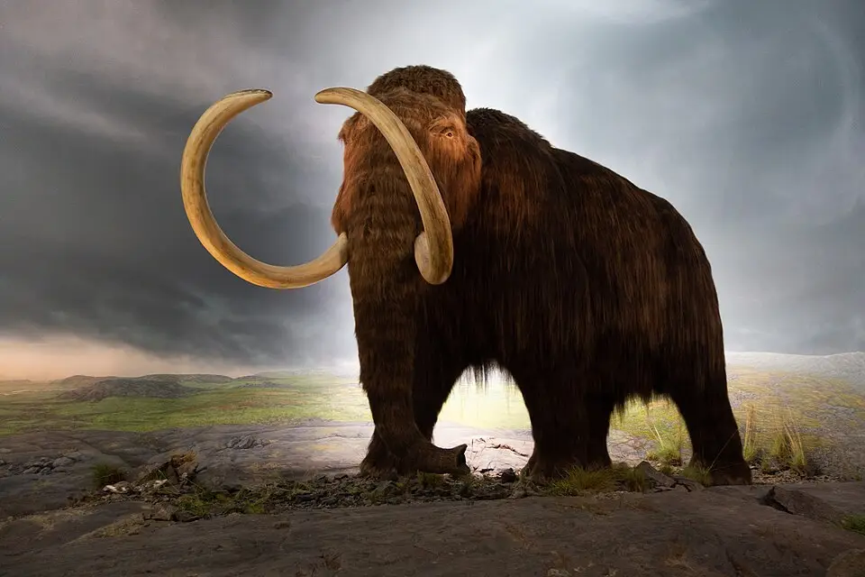
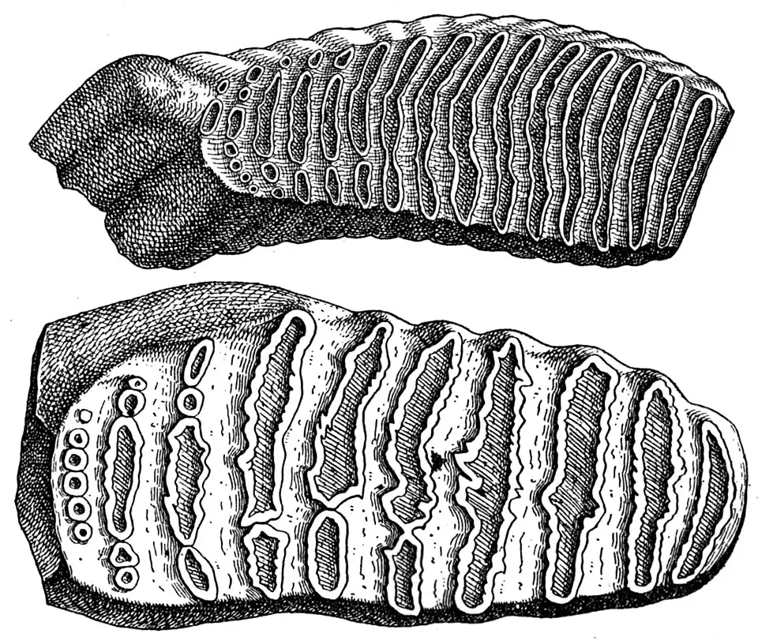
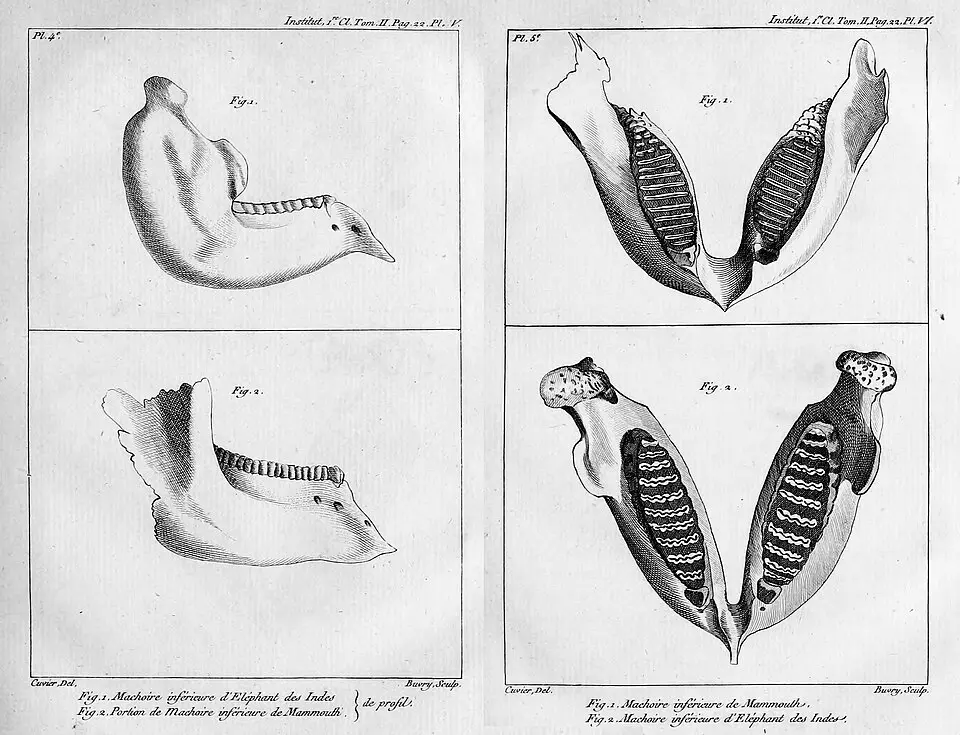

Khi Kim tự tháp được xây, voi ma mút vẫn còn sống
Khoảng năm 2000 TCN, Đại Kim tự tháp đã đứng ở Giza vài thế kỷ. Cùng lúc đó, trên một hòn đảo ở Bắc Băng Dương, những con voi ma mút cuối cùng vẫn đang gặm cỏ.

Năm 1995, nhà cổ sinh vật học người Nga Sergey Vartanyan và các đồng nghiệp công bố trên tạp chí Radiocarbon một loạt kết quả định tuổi bằng carbon phóng xạ khiến giới khoa học bất ngờ. Xương voi ma mút nhặt được trên đảo Wrangel, ngoài khơi đông bắc Siberia, có tuổi chỉ khoảng 4.000 năm. Nghĩa là những con ma mút này còn sống khi người Ai Cập đã xây xong Đại Kim tự tháp và tượng Nhân sư từ vài thế kỷ trước. Hai thế giới ấy chưa bao giờ gặp nhau, nhưng chúng tồn tại cùng một thời.
Vì sao chúng sống sót ở đây?
Trên đất liền Siberia, quần thể ma mút lông xoăn suy giảm vào cuối thế Pleistocene và biến mất khoảng 10.000 năm trước. Các nhà khoa học vẫn tranh luận về vai trò của khí hậu ấm lên và của con người săn bắn.
Wrangel là một ngoại lệ. Khi băng tan, mực nước biển dâng lên và cắt hòn đảo khỏi lục địa. Theo các nghiên cứu được Wikipedia tổng hợp, khoảng 500 đến 1.000 con ma mút bị cô lập ở đây và sống thêm khoảng 6.000 năm. Phần trung và nam của đảo có những thung lũng ấm hơn, với kiểu đồng cỏ được mô tả như tàn dư của thảo nguyên thời Băng hà.
Ma mút Wrangel từng được cho là một giống lùn. Phân tích sau này cho thấy chúng nhỏ hơn họ hàng trên đất liền nhưng vẫn nằm trong khoảng kích thước bình thường. Một con đực trưởng thành được ước tính cao khoảng 2,8 m và nặng khoảng 4,5 tấn.
Bằng chứng nói gì


Niên đại dựa trên việc định tuổi trực tiếp các mẩu xương tìm thấy trên đảo. Các nghiên cứu ADN cho biết thêm nhiều điều. Quần thể Wrangel chỉ có khoảng 300 đến 1.000 cá thể, nên bị cận huyết. Chúng mất khoảng 20 đến 30% độ đa dạng di truyền và khoảng 65% độ đa dạng ADN ty thể. Sau cú sụt ban đầu đó, quần thể có vẻ ổn định suốt hàng nghìn năm.
Năm 2017, một nhóm nghiên cứu cho rằng bộ gen của những con cuối cùng đang trong tình trạng "sụp đổ di truyền": nhiều gen liên quan đến khứu giác và protein trong nước tiểu đã hỏng. Năm 2024, một nghiên cứu khác phản bác. Họ thấy những đột biến có hại nhất đã bị chọn lọc loại bỏ, ở mức thấp hơn cả quần thể trên đất liền. Vì quần thể ổn định rồi biến mất đột ngột, nhóm này nghiêng về một sự kiện thảm họa: một đợt băng giá phủ lên lớp tuyết, một trận dịch, hay một biến cố khác. Câu hỏi ấy chưa có lời giải.
Cũng có người cho rằng ma mút còn sống trên bán đảo Taymyr của Siberia đến cùng thời, dựa trên ADN môi trường trong đất. Bằng chứng này bị nghi ngờ, vì ADN trong lớp đất đóng băng có thể bị xáo trộn sang các lớp trầm tích trẻ hơn.
Con người đến sau


Dấu vết con người sớm nhất trên đảo là Chertov Ovrag, một trại săn ngắn ngày của người Paleo-Eskimo ở bờ nam, có niên đại khoảng 3.600 năm trước. Tại đó, các nhà khảo cổ tìm thấy xương của ít nhất 32 con ngỗng tuyết, hải cẩu, một con hải mã, một con gấu Bắc Cực và một đầu lao móc làm bằng ngà hải mã. Không có xương ma mút bị săn.
Nhiều tác giả cho rằng ma mút đã tuyệt chủng vài thế kỷ trước khi những người thợ săn này đặt chân lên đảo. Vì vậy có lẽ không ai từng nhìn thấy những con ma mút cuối cùng. Một quần thể khác trên đảo St. Paul ở Alaska, biến mất khoảng 5.600 năm trước, cũng chết trước khi con người đến. Ở đó, nguyên nhân được cho là nước biển dâng và đảo khô dần, làm cạn nguồn nước ngọt.
Những con ma mút cuối cùng không phải là quái vật thời tiền sử xa xôi, mà là hàng xóm cùng thời với các vương triều Ai Cập, dù chúng chưa từng biết nhau.
Một cái tên đặt từ xa
Hòn đảo mang tên nam tước Ferdinand von Wrangel, nhà thám hiểm người Nga đã đi tìm nó trong chuyến thám hiểm 1820 đến 1824 nhưng không thấy. Người đặt tên là thuyền trưởng săn cá voi người Mỹ Thomas Long, khi ông nhìn thấy đảo từ khoảng 15 dặm vào tháng 8 năm 1867. Nam tước Wrangel chưa bao giờ đặt chân lên hòn đảo mang tên mình.
Ngày nay Wrangel là khu bảo tồn thiên nhiên nghiêm ngặt của Nga từ năm 1976. Năm 2003, chỉ có bốn kiểm lâm sống quanh năm trên đảo, cùng khoảng 12 nhà khoa học đến vào mùa hè. Bộ gen của ma mút Wrangel giờ được dùng như một lời cảnh báo cho các loài đang có quần thể nhỏ. Những con ma mút cuối cùng không phải là quái vật thời tiền sử xa xôi, mà là hàng xóm cùng thời với các vương triều Ai Cập, dù chúng chưa từng biết nhau.